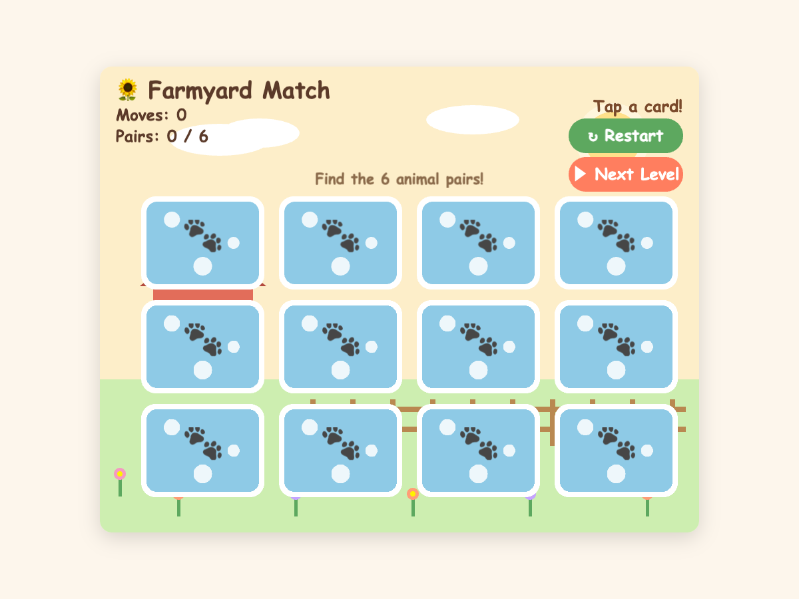
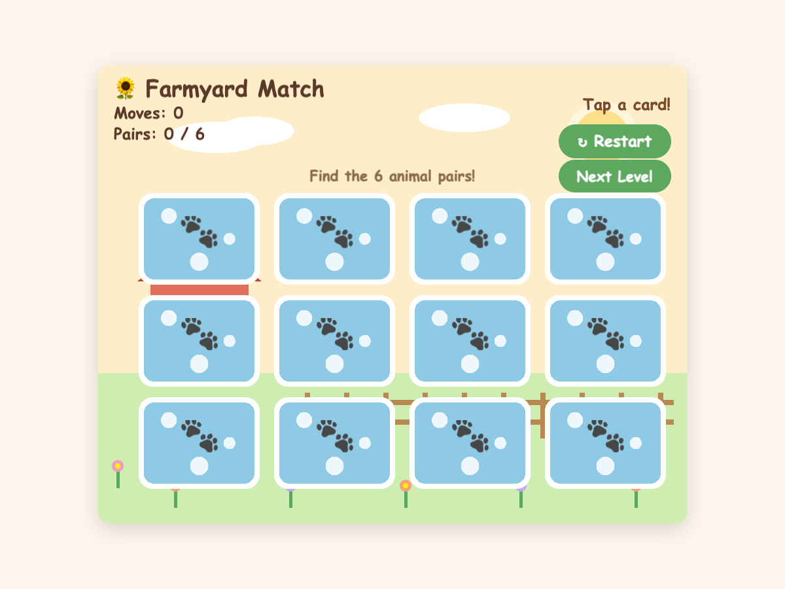
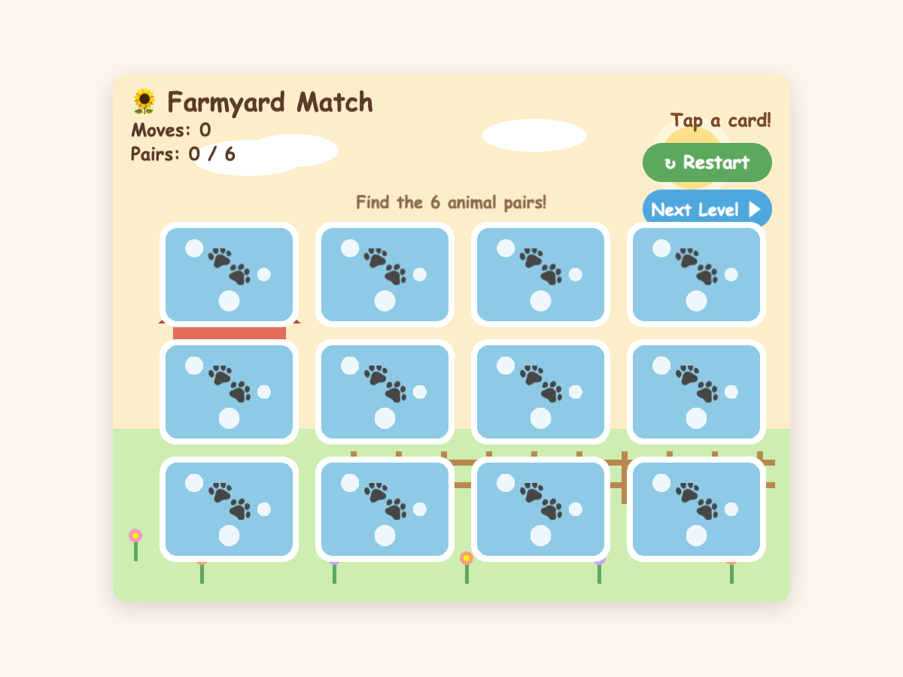

muse-spark-1.3-contributor (forced API key) · one controlled A/B/C trial, run once per condition · byte-identical request “Add a Next Level button beneath the Restart button.” · identical baseline.
8de86811-dbe3-478d-92bd-9de56af53e60aceff9cf-0f0a-4cdf-9465-39e98ba8d423
0xFF7E5F sunset
rendered coverage: 1.082%
job 926bd9d0…


0x4EA8DE ocean
rendered coverage: 0.879%
job 6a246238…